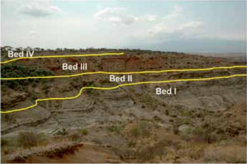
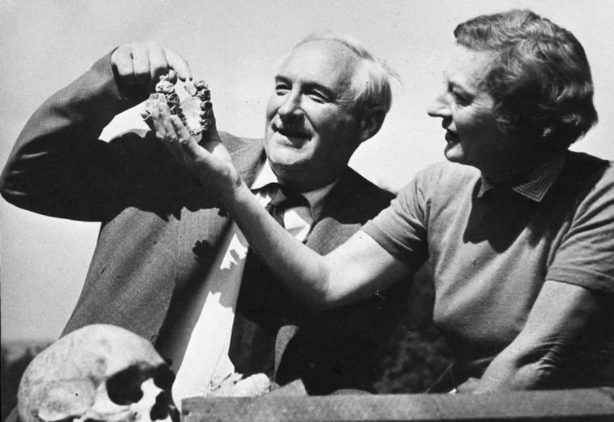
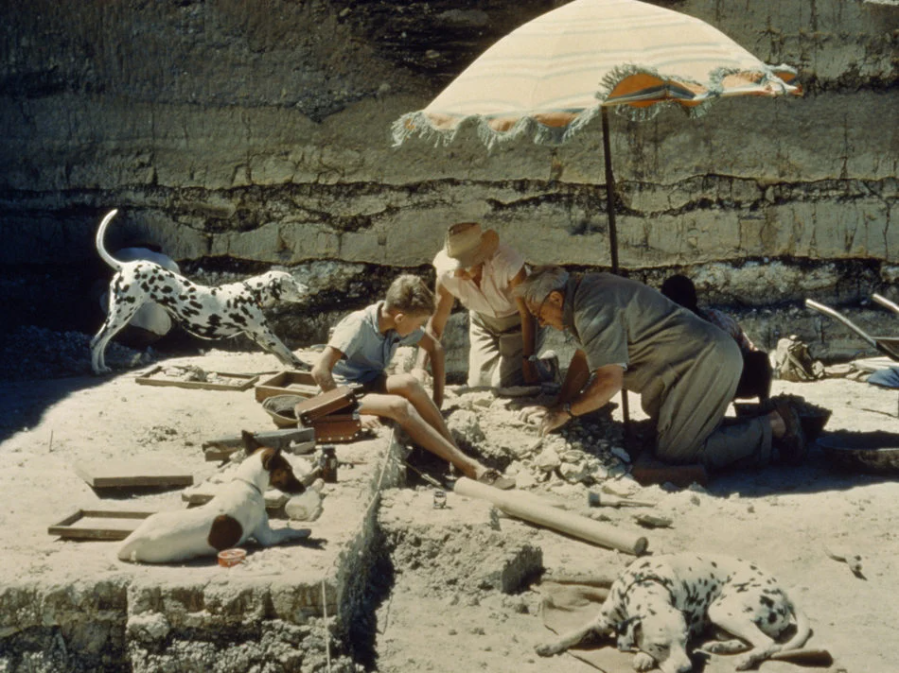
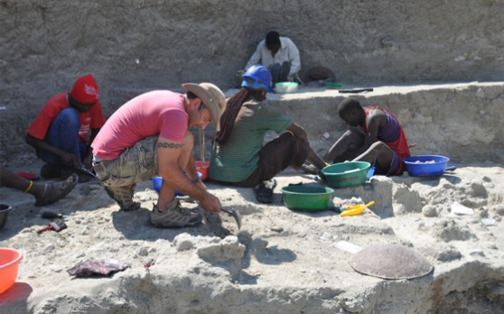

Olduvai Gorge was first discovered and excavated by the Leakeys in the 1930s...
Erosion caused Olduvai Gorge to be divided into “a main gorge and a side gorge” that form a Y shape. The strata have been divided into five beds chronologically, with Bed I from 1.9 to 1.7 millions years ago, Bed II from 1.7 to 1.15 million years ago, Bed III from 1.15 to 0.8 million years ago, Bed IV from 0.8 to 0.6 millions years ago, and Masek Beds from 0.6 to 0.4 millions years ago. (Chazan)
Take geological factors into account, Olduvai Gorge was buried so deeply that archaeologists could not simply walk and see artifacts on the surface. The sites can only be discovered where “natural erosion has cut through the accumulation of sediments,” and thus “fossils and stone tools deposited around Lake Olduvai” are exposed. Therefore, first research at Olduvai includes walking along the gorge, looking for places where artifacts are eroding out of the cliffs, and digging into the cliff face at these spots. (Chazan)
In the 1930s, Louis Leakey found stone tools at Olduvai Gorge. About twenty years later, Mary Leakey discovered a skull belonging to one of the human ancestors, Paranthropus boisei (originally named Zinjanthropus boisei). (Horton) During the 1960s and 70s, more fossils of other early human species, such as Homo habilis and Homo erectus, were found by the sons of the Leakeys. (Special Travel International) The Leakeys called “the smaller form of hominin” Homo habilis, or handy man. They believed it was the ancestor of Homo sapiens, and the stone tools at the site were built by them. (Lewin) In the twentieth century, one of the excavations at Olduvai Gorge, Henrietta Wilfrida Korongo East East, was re-excavated, since the Leakeys excavated it in 1972 but never published anything. (HWKEE) More research has been done for other sites at Olduvai Gorge these years, such as new excavations at the MNK Skull site.

a section of Olduvai Gorge with the position of the main sedimentary beds

Mary Leakey holding the jaw of “Zinj” as Louis Leakey points out a feature of the fossil

Louis, Mary, and Philip Leakey excavating a nearly two-million-year-old habitation site at Tanzania’s Olduvai Gorge

Excavations at Henrietta Wilfrida Korongo East East